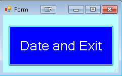
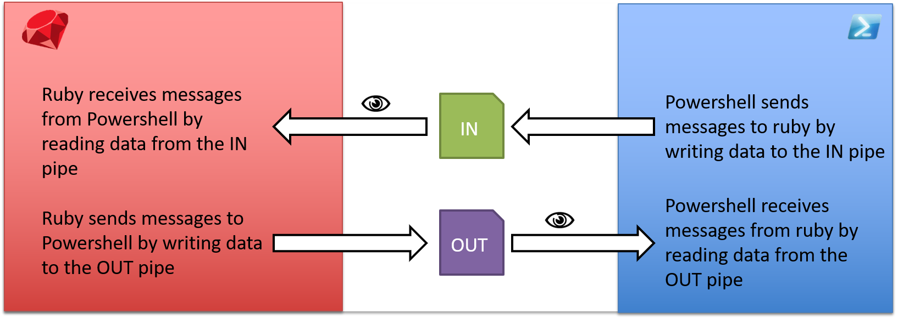

We use Graphical User Interfaces (GUIs) to display information and interact with the user.
In InfoWorks ICM, Innovyze have given us a few standard GUIs to work with. Each standard GUI will open a separate window containing varying GUI controls, depending on the parameters given.
- WSApplication.file_dialog
- WSApplication.folder_dialog
- WSApplication.graph (I haven't been able to get this to work in ICM 6.5.6)
- WSApplication.input_box
- WSApplication.message_box
- WSApplication.open_text_view
- WSApplication.prompt
- WSApplication.scalars
These standard GUIs are great but if we throw dialog after dialog at the user, it can often confuse them more than it helps them. Ideally, we want 1 fully customisable GUI containing all the buttons, text boxes and other UI controls required to perform the task. Furthermore, what if you want a GUI with a control that is not standard? E.G. You might want a treeview, listview or grid? What if you'd like your button's to be named differently, or show dynamic text which changes with the user's choices? Unfortunately, the InfoWorks ICM API fails to provide any support for these behaviors in the standard GUI functions.
In this mini series we are going to explore alternative systems that we can use to build fully customisable GUIs for use in ICM.
Today, we're going to build custom GUIs with Powershell!
Powershell
PowerShell is a shell-like programming language created by Microsoft. Powershell is installed on all systems running Windows 7 and above, and thus alone makes Powershell an ideal candidate for GUI framework, as this will support all recent major versions of Infoworks ICM.
But how do we build GUIs in Powershell?
Powershell was built on top of the .NET framework and therefore has full access to Windows Forms. It is this library that we will use to make our fully customisable GUIs.
Powershell Syntax
I found numerous syntax overviews online, however I figured I should give a short overview myself, found below...
The first thing to note is that Powershell is a "shell based scripting language" and thus every object, class, function etc. in Powershell is treated as an 'application', as it were, in Command Prompt. This brings some unique behaviors which look quite bizarre to programmers who come from a C/Ruby/VB background.
All variable names must be prefixed with a $. So houseCount = 5 would cause a syntax error. The correct syntax being $houseCount = 5. $houseCount is now an 'application' in it's own right. One common programmatic operation we might like to perform is logical operations, (<,>,==,!=,...). E.G. in Ruby we would write: if($houseCount < 10){Write-Host "Too Few!"}. Trying to execute this in Powershell will fail. Why? Because < in command line means "Pipe to STDIN". Instead we have to use command line arguments of $houseCount: if($houseCount -lt 10){Write-Host "Too Few!"}. See the table below:
| Operator | PS Equivalent |
|---|---|
< |
-lt |
> |
-gt |
== |
-eq |
!= |
-ne |
&& |
-and |
|| |
-or |
If you have a keen eye you might have noticed the Write-Host routine. The is equivalent to puts in Ruby. It is via Write-Host that we will output all data to STDOUT from Powershell to Ruby. Arrays and hashes are created with the @ syntax: $myArray=@(1,2,3) and $myHash = @{'foo'='bar', 'bash'=3}. Looping through arrays and lists can be done with the ForEach statement:
ForEach($num in $myArray){
Write-Host $num
}
#>1
#>2
#>3
Functions defined in this way are called without parenthesis: $a = myFunc 1,2. Instances of classes are created using one of the 2 following syntaxes: $math = New-Object MyMath; $math.add(1,3) or [MyMath]::new().add(1,3). Did you notice the curly brackets used to call class functions? Yeah... That's Powershell for you. Whenever you call the method of an Object or Type you use curly brackets, where as all standard functions are called in the command-line convention.
This actually brings us nicely onto the typed side of Powershell. In general, Powershell is a dynamically typed language, like Ruby, but it has the ability to be statically typed as well. A typed variable is cast to a new type using the square brackets containing the type you want to cast to. E.G. [Double]10 declares the number 10 of type double (10 on it's own would create an integer).
If you ran the command [Double]10 you might have noticed that 10 got printed to the STDOUT. Similarly when calling [MyMath]::new().add(1,3), 4 is printed to STDOUT. Again, that's Powershell... You don't necessarily need to write Write-Host to write to the STDOUT... All you need is to execute a function without otherwise handling the result... To avoid this we can cast the result to void e.g. [void][MyMath].new().add(1,3).
And that just about covers all you need to know to get started using Powershell!
Powershell from ICM
The Powershell application has the ability to be run from the command line. It offers a few ways to execute Powershell scripts through different command line arguments. There are numerous methods all of which are explained on docs.microsoft, but in general we only care about how to execute Powershell scripts. After all, we ideally want to build a general Ruby library that will let us execute Powershell to our hearts content! The command line arguments we're interested in are as follows:
Powershell
[-Command "<<powershell script goes here>>"]
[-EncodedCommand <<encoded powershell script goes here>>]
[-File "<<Powershell file goes here>>"]
The -command argument is only really useful for 1 line powershell scripts. In our case we would want to execute arbitrary number of lines. The -file argument is also a very good option. If you specify a file path then Powershell will execute the specified file.
There are some slight downsides to this though, as we'd need to write the file with Ruby first, and this could be quite slow depending on hardware. However for larger Powershell scripts this may be our only option...
The -EncodedCommand argument was added to help users execute scripts that have potentially complex quote escaping. This command is what I've used in my Powershell class below, but it doesn't rule out the other arguments. The benefit to the encoded command to me is that the Ruby script stays entirely virtual, and is never written to the hard disk. However with large scripts -File might be a better option!
Ultimately, you can find my Powershell execution library below:
class Powershell
#exec() will execute any arbitrary powershell script which is not already encoded.
def self.exec(data)
#Encoding ensures there'll be no issues with complex quoted datarequire 'base64'
data = Base64.strict_encode64(data.encode("utf-16le"))
#Execute encoded commands:
require 'win32ole'
shell = WIN32OLE.new("WScript.Shell")
app = shell.exec("powershell -NoProfile -NonInteractive -WindowStyle Hidden -EncodedCommand \"" + data + "\"")
return {:STDOUT=>app.StdOut.ReadAll(),:STDERR=>app.StdErr.ReadAll()}
end
#execEncoded() will execute any arbitrary powershell script which has already been encoded.
def self.execEncoded(data)
require 'win32ole'
shell = WIN32OLE.new("WScript.Shell")
app = shell.exec("powershell -NoProfile -NonInteractive -WindowStyle Hidden -EncodedCommand \"" + data + "\"")
return {:STDOUT=>app.StdOut.ReadAll(),:STDERR=>app.StdErr.ReadAll()}
end
end
The exec method encodes the Powershell script string you give it, and then executes it with Powershell. execEncoded on the other hand executes a pre-encoded script (in-case you want your scripts to be shady).
Take a simple hello world example written in Powershell:
helloWorld=<<END_HELLOWORLD
$x = "hello world"
Write-Host $x
END_HELLOWORLD
p Powershell.exec(helloWorld)
This will print the following hash to the ICM script log:
{:STDOUT=>"hello world", :STDERR=>""}
The execEncoded method executes already encoded Powershell. This is less often useful, as most people want to keep their scripts readable... But each to their own!:
Note: Encoding a script does not make it any more secure! Encoding is not the same as either encryption or obfuscation.
# [Write-Host "hello world"] encoded with [Convert]::ToBase64String([System.Text.Encoding]::Unicode.GetBytes('Write-Host "hello world"'))
helloEncode="VwByAGkAdABlAC0ASABvAHMAdAAgACIAaABlAGwAbABvACAAdwBvAHIAbABkACIA"
p Powershell.execEncoded(helloEncode)
Now that we've got the basics down, let's build our first GUI with Powershell!
Powershell GUI
Our first GUI is going to be very simple comprising of a simple form window and a button. This button will use Powershell to get the current date, print it to the STDOUT and close the window.
To build the GUI itself, I used the site POSHGUI. The website allows you to build a GUI online and is surprisingly customisable for a free utility. It allows you to create and customise a lot of Windows Forms objects: TextBox, Button, Label, PictureBox, CheckBox, ComboBox, ListView, ListBox, RadioButton, Panel, Groupbox, MaskedTextBox, ProgressBar and DataGridView. After you have built the GUI you can use the code editor to copy the code used to create the GUI. Most of the code below is copy-and-pasted from this tool, however in later examples I had a lot more experience and thus it became a lot easier to build the GUIs myself without the need of the tool.
require_relative('Powershell.rb')
gui=<<END_GUI
Add-Type -AssemblyName System.Windows.Forms
[System.Windows.Forms.Application]::EnableVisualStyles()
#Create form
$Form = New-Object system.Windows.Forms.Form
$Form.ClientSize = '228,114'
$Form.text = "Form"
$Form.BackColor = "#baffff"
$Form.TopMost = $false
#Create button
$Exit = New-Object system.Windows.Forms.Button
$Exit.BackColor = "#0000ff"
$Exit.text = "Date and Exit"
$Exit.width = 209
$Exit.height = 82
$Exit.location = New-Object System.Drawing.Point(10,20)
$Exit.Font = 'Microsoft Sans Serif,20'
$Exit.ForeColor = "#ffffff"
#Not really required in this but was generated.
$Form.controls.AddRange(@($Exit))
#Add click event on button. Get date, write it to STDOUT, and close form
$Exit.Add_Click({
$date = Get-Date
Write-Host $date
$form.Close()
})
#Show dialog
[void]$Form.ShowDialog()
END_GUI
p Powershell.exec(gui)
When running the ruby script we get the following:
When the button is clicked, the GUI closes and ruby prints the following Hash to the console:
{:STDOUT=>"15/04/2018 20:59:02\n", :STDERR=>""}
Hopefully from this small example, you are able to see how easy it can be to make GUIs in Powershell, and how easy it is to intergrate this into your own Ruby scripts as well!
Example 2 - Listview of the currently selected network objects:
Now that we know how to build a simple GUI, let's build something a bit more complex! Let's build a GUI which displays a list view containing all of the selected network objects. The user will then be able to refine his selection further by selecting the objects they want to keep. Upon pressing the OK button, we will return the selected list view items to Ruby, and unselect all network objects which aren't within the user's selection.
If the cancel button is clicked we will return the string "Cancel" to Ruby, which Ruby can use to determine when the cancel button was clicked.
require_relative('Powershell.rb')
require 'json'
net = WSApplication.current_network
data = {}
data["head"] =["Table name", "Object ID"]
data["body"] = []
selectedItems = []
#Get all selected items
net.table_names.each do |table|
selection = net.row_object_collection_selection(table)
selection.each do |o|
data["body"].push([table,o.id])
selectedItems.push(o)
end
end
#Build GUI
gui=<<END_GUI
#Get data from ruby as JSON string
$data = #{data.to_json.to_json.gsub(/\\"/,"\"\"")}
$data = ConvertFrom-Json $data
Add-Type -AssemblyName System.Windows.Forms
[System.Windows.Forms.Application]::EnableVisualStyles()
#region begin GUI{
$Form = New-Object system.Windows.Forms.Form
$Form.ClientSize = '500,400'
$Form.text = "Form"
$Form.TopMost = $false
$form.Resize = $false
$form.FormBorderStyle = 'FixedToolWindow'
$okButton = New-Object System.Windows.Forms.Button
$okButton.text = "OK"
$okButton.width = 150
$okButton.height = 50
$okButton.location = New-Object System.Drawing.Point(96,330)
$okButton.Add_Click({
ForEach($item in $ListView1.SelectedIndices){
Write-Host $item
}
$Form.close()
})
$cancelButton = New-Object System.Windows.Forms.Button
$cancelButton.text = "Cancel"
$cancelButton.width = 150
$cancelButton.height = 50
$cancelButton.location = New-Object System.Drawing.Point(256,330)
$cancelButton.add_click({
Write-Host "Cancel"
$Form.close()
})
$ListView1 = New-Object System.Windows.Forms.ListView
$ListView1.text = "listView"
$ListView1.width = 490
$ListView1.height = 300
$ListView1.location = New-Object System.Drawing.Point(5,5)
$ListView1.MultiSelect = 1
$ListView1.View = 'Details'
$ListView1.FullRowSelect = 1
$ListView1.Font = 'Microsoft Sans Serif,20'
#Generate headers
ForEach($d in $data.head){
$col = $ListView1.columns.add($d)
$col.width = -2
}
#Generate items
ForEach($item in $data.body){
$lvi = New-Object System.Windows.Forms.ListViewItem($item)
For($i=1;$i -lt $item.length; $i++){
[void]$lvi.SubItems.Add($item[$i])
}
[void]$ListView1.items.add($lvi)
}
$Form.controls.AddRange(@($okButton, $cancelButton ,$ListView1))
[void]$Form.ShowDialog()
END_GUI
#Execute Powershell script, display GUI and retrieve user selection.
guiData = Powershell.exec(gui)
#If cancel button was not clicked then...
if guiData[:STDOUT] != "Cancel\n"
#Get refined selection from STDOUT
refinedSelection = guiData[:STDOUT].split("\n").map {|i| i.to_i}
#If object NOT within selected range, unselect it.
selectedItems.each_with_index do |o,ind|
if !(refinedSelection.include? ind)
o.selected = false;
end
end
end
Example 3 - Charting:
Powershell isn't only useful for user input. It can also be used to display statistics and other information to the user through the use of .NET's DataVisualization libraries. In this example we build a GUI containing a bar chart displaying the quantities of model network objects in the current network.
Bonus features
You can also click on each of the bars to turn them light green. I also added an 'invert' button which inverts all the values in the graph. This helps you click on bars which have small values. I could imagine a GUI like this being used for model review. Maybe you could build a ruby script using the WSFlags library and display each of the flags, how often it is used, and it's description...
require_relative('Powershell.rb')
require'json'
net = WSApplication.current_network
data = {}
net.table_names.each do |table|
begin
roc = net.row_object_collection(table)
roc[0].system_type
data[table] = roc.length
rescue
end
end
data = data.to_json.to_json.gsub(/\\"/,"\"\"")
gui=<<END_GUI
$data = #{data}
#Parse data to JSON
$json_data = ConvertFrom-Json $data
#Create hash table from object
$data = @{}
ForEach($p in $json_data.PSObject.Properties){
$data[$p.name]=$p.value
}
# load the appropriate assemblies
[void][Reflection.Assembly]::LoadWithPartialName("System.Windows.Forms")
[void][Reflection.Assembly]::LoadWithPartialName("System.Windows.Forms.DataVisualization")
# create chart object
$Chart = New-object System.Windows.Forms.DataVisualization.Charting.Chart
$Chart.Width = 900
$Chart.Height = 400
$Chart.Left = 50
$Chart.Top = 50
# create a chartarea to draw on and add to chart
$ChartArea = New-Object System.Windows.Forms.DataVisualization.Charting.ChartArea
$Chart.ChartAreas.Add($ChartArea)
# add data to chart
[void]$Chart.Series.Add("Data")
$Chart.Series["Data"].Points.DataBindXY($data.Keys, $data.Values)
$Chart.ChartAreas[0].AxisX.Interval = 1
#If you don't want a bar chart:
#https://msdn.microsoft.com/en-us/library/system.web.ui.datavisualization.charting.seriescharttype(v=vs.110).aspx
#Use $Chart.Series["Data"].ChartType
$DefaultBarColor = [System.Drawing.Color]::FromArgb(150,200,255)
$SelectBarColor = [System.Drawing.Color]::FromArgb(0,255,0)
$Chart.Series["Data"].ToolTip = "#VALX, #VAL"
$Chart.Series["Data"].Color = $DefaultBarColor
$Chart.Series["Data"].BorderColor = [System.Drawing.Color]::FromArgb(0,0,0)
$Chart.Add_Click({ #eventArgs => $_#Get clicked bar
$result = $chart.HitTest($_.X,$_.Y, $false, [System.Windows.Forms.DataVisualization.Charting.ChartElementType]::DataPoint)
if($result.Series.Points -ne $null){
#Write-Host $Chart.Series["Data"].Points[$result.PointIndex].AxisLabel#Color as selected:
foreach($pt in $chart.Series["Data"].Points){
$pt.color = $DefaultBarColor
}
$Chart.Series["Data"].Points[$result.PointIndex].Color = $SelectBarColor
}
})
$button = New-Object Windows.Forms.Button
$button.Width = 100
$button.Height = 30
$button.top = 0
$button.left = 0
$button.Text = "Invert"
$button.add_click({
foreach($pt in $Chart.Series["Data"].Points){
$val = $pt.YValues[0]
if($val -ne 0){
$val = 1/$val
}
$pt.YValues = @($val)
}
$Chart.ChartAreas[0].RecalculateAxesScale()
})
# display the chart on a form, make the chart resize with the form
$Chart.Anchor = [System.Windows.Forms.AnchorStyles]::Bottom -bor [System.Windows.Forms.AnchorStyles]::Right -bor
[System.Windows.Forms.AnchorStyles]::Top -bor [System.Windows.Forms.AnchorStyles]::Left
$Form = New-Object Windows.Forms.Form
$Form.Text = "Model statistics"
$Form.Width = 1000
$Form.Height = 500
$Form.controls.add($Chart)
$Form.Add_Shown({$Form.Activate()})
$Form.controls.AddRange(@($button))
[void]$Form.ShowDialog()
END_GUI
Powershell.exec(gui)
Dynamic Data Transfer
One of the biggest issues with using Powershell is that even though you can input data to the Powershell script before execution, there is no direct method for Powershell to 'have a conversation' with Ruby while it is executing. This is due to the fact that Powershell is an external process. However, that doesn't mean that we can't make our own method of communication that Powershell and Ruby can use!
Below are a few examples of systems which could in theory be used to have 'conversations' with other processes:
Windows Message Loop
Whenever a user interacts with a window, on a machine running Windows OS, the OS sends a message to the window being interacted with. The application displaying the GUI will then take this message, and figure out what it needs to do in response to the message received. Also note that all windows controls (buttons,labels,...) are also windows in their own right. However these windows have special styles and actions depending on the windows messages they receive. For example, when I click on a button, the Windows OS sends the WM_LBUTTONDOWN message to the button, and this will usually cause the button to execute some code. You could imagine it similar to this:
def myButton.onMessage(msg,wParam,lParam)
# Note: wParam contains buttons being held when clicked, e.g. if control is held, or if shift is held, etc.
# lParam contains the x and y coordinates of the mouse event
if msg==WM_LBUTTONDOWN
#Do something when button is clickedend
end
Powershell you can interact with windows messages sent to a GUI by overriding the WndProc method of the System.Windows.Forms.Form class. This is slightly convoluted and requires C# code. See below:
$forms = [System.Reflection.Assembly]::LoadWithPartialName("System.Windows.Forms")
Add-Type -ReferencedAssemblies $forms -TypeDefinition "
using System;
using System.Windows.Forms;
using System.Runtime.InteropServices;
namespace Sancarn
{
public class Form1 : Form
{
public event EventHandler MessageHandler;
public Message lastMessage;
public string ptrToString(IntPtr ptr)
{
return Marshal.PtrToStringAnsi(ptr);
}
[System.Security.Permissions.PermissionSet(System.Security.Permissions.SecurityAction.Demand, Name="FullTrust")]
protected override void WndProc(ref Message m){
EventHandler handler = MessageHandler;
lastMessage = m;
if(null != MessageHandler) MessageHandler(this,EventArgs.Empty);
base.WndProc(ref m);
}
}
}
"
$WM_USER=0x0400
$Tasks = @()
$Retvals = @()
$Form = New-Object Sancarn.Form1
$Form.Text = "Model statistics"
$Form.Add_MessageHandler({
Switch($Form.lastMessage.Msg){
$WM_USER {
if($Tasks.Length -gt 0){
$Form.lastMessage.Result = $Tasks.Get(1)
$Tasks.Remove(1)
} else {
$Form.lastMessage.Result = 0
}
}
$($WM_USER+1) {
if($Form.lastMessage.LParam){
$Retvals.add([System.Runtime.InteropServices.Marshal]::PtrToStringAnsi($Form.lastMessage.WParam,$Form.lastMessage.LParam))
} else {
$Retvals.add([System.Runtime.InteropServices.Marshal]::PtrToStringAnsi($Form.lastMessage.WParam))
}
}
}
})
[void]$Form.ShowDialog()
The Operating System isn't the only process which can send messages. Other applications can too! In fact, Ruby can send messages to any window on the operating system using the SendMessage() and PostMessage() methods. Ruby can therefore continually send messages asking Powershell whether any tasks require completing on the ruby end. After completing the task, Ruby can send another message to Powershell containing the resultant data.
WM_USER = 0x1000
while form.isRunning dowhile !(data=SendMessage(powershellWND,WM_USER,nil)) doend
#Process data and send it back to Powershell
data = data + 1
SendMessage(powershellWND,WM_USER+1,data)
end

Furthermore, Ruby should be able to process messages sent to an open ICM window before ICM's main process handles the message. It can do this by using GetMessage, TranslateMessage and DispatchMessage. WaitMessage could also be used and would be ideal, as no polling would be required and ReplyMessage can be used to return data to the calling process.
I am yet to test this fully. However it would likely be the best option if it works.
Alternative Ruby message handler
Theoretically in Ruby version 2 (ICM 8.0+) you should be able to overwrite the WndProc using the following
WH_CALLWNDPROC = 4
windowProc = Class.new(Fiddle::Closure) do
def call(message,wParam,lParam)if message == WM_USER
#process data
data = 3
#call next hook
CallNextHookEx.call(0, message, wParam, lParam)
return data
end
end
end.new(Fiddle::TYPE_LONGLONG, [Fiddle::TYPE_LONG,Fiddle::TYPE_LONG,Fiddle::TYPE_LONG])
hook = SetWindowsHookEx.call(WH_CALLWNDPROC,windowProc,0,GetCurrentThreadId.call())
Sockets
Sockets are another method of transferring data between 2 applications. Generally speaking, an application registers itself as a server. Then other client applications can use TCP/HTTP requests to ask for certain data. In our case, Ruby would set up a server, and Powershell would make requests for any tasks which require running in ICM.
We will revisit this technique in part 2 when we cover HTML GUIs.
Pipes
Often pipes are also used for inter-process communication. Pipes are special files which are hidden to Windows Explorer. A pipe can be written to by 1 application, and read from by another. By setting up 2 pipes, an input and an output pipe, one can setup a conversation.
ICM likely already uses pipes for Ruby scripts, as a pipe named Ruby_<> is created whenever an instance of ICM runs a Ruby script. Unfortunately, I am yet to be able to write to a pipe using Ruby on our system at work, and thus I do not have any working code for this kind of IPC. I believe these operations have been restricted by our IT department.
Files
This is the final and simplest form of IPC. Ruby and Powershell could each have a file stored in ENV["TEMP"]. We will call these files the IN and OUT files. Each file acts as a conduit for Powershell to transfer information to and receive information from Ruby. When Ruby launches it creates the IN and OUT files and passes the file paths to the Powershell script. Ruby then launches the Powershell script in a new thread, and proceeds to monitor the IN file for changes.
If a GUI event occurs which requires a task to be executed in the Ruby environment, then Powershell can write the task to the IN file. Afterwards Powershell begins to monitor the OUT file for changes. Ruby, noticing the IN file has changed, will read the task out of the file, process it and return all outputs to the OUT file. Ruby will then continue to monitor the IN file for further tasks. Powershell, detecting the OUT file has changed, will take the processed data and continue on with it's GUI events as usual. For more information see the diagram below:
Powershell.rb Improved
To cater for the above data transfer systems I modified the original Powershell class to create a easy-to-access data transfer class DTP. This Ruby library will integrate a DTP class into both Powershell and Ruby. Ultimately, the class allows us to run Ruby code directly from Powershell.
class Powershell
#exec() will execute any arbitrary powershell script which is not already encoded.
def self.exec(data,dtp=false)
if dtp
data = self.__dtp_execute(data)
end
#Encoding ensures there'll be no issues with complex quoted data
require 'base64'
data = Base64.strict_encode64(data.encode("utf-16le"))
#Execute encoded commands:
require 'win32ole'
shell = WIN32OLE.new("WScript.Shell")
#if (debug) then " -WindowStyle Hidden"
app = shell.exec("powershell -NoProfile -NonInteractive -EncodedCommand \"" + data + "\"")
sleep(0.1) while app.status == 0
if dtp
self.__dtp_exit()
end
return {:STDOUT=>app.StdOut.ReadAll(),:STDERR=>app.StdErr.ReadAll()}
end
#execEncoded() will execute any arbitrary powershell script which has already been encoded.
def self.execEncoded(data)
require 'win32ole'
shell = WIN32OLE.new("WScript.Shell")
app = shell.exec("powershell -NoProfile -NonInteractive -WindowStyle Hidden -EncodedCommand \"" + data + "\"")
return {:STDOUT=>app.StdOut.ReadAll(),:STDERR=>app.StdErr.ReadAll()}
end
def self.__dtp_execute(data)
@@IN = "#{ENV["TMP"]}\\IN_#{$$}.txt"
@@OUT = "#{ENV["TMP"]}\\OUT_#{$$}.txt"
dtp=<<-DTP_END
# Called with [DTP]::exec("return ""hello world""")
class DTP {
static [String]$IN = "#{@@IN}"
static [String]$OUT = "#{@@OUT}"
static [String]exec([String]$script) {
$OLD = (Get-FileHash -Path $([DTP]::OUT)).Hash
$script |Out-File -FilePath $([DTP]::IN) -Encoding ascii
while($OLD -eq (Get-FileHash -Path $([DTP]::OUT)).Hash){
Start-Sleep -Milliseconds 100
}
return Get-Content -Path $([DTP]::OUT)
}
}
DTP_END
data = dtp + "\r\n" + data
File.write(@@IN,"")
File.write(@@OUT,"")
@@dtp_thread = Thread.new do
while true
current = File.read(@@IN).hash
#Poll till change... (in an ideal world we would use win32 api's WaitForObject() here...)
while current == File.read(@@IN).hash
sleep(0.1)
end
#Execute and write data to Powershell
File.write(@@OUT,eval("lambda do;#{File.read(@@IN)};end.call()"))
end
end
return data
end
def self.__dtp_exit()
@@dtp_thread.exit
#Force delete
require 'win32api'
fileDelete = Win32API.new("Kernel32.dll","DeleteFile",["p"],"i")
#Force delete in and out files
fileDelete.call(@@IN)
fileDelete.call(@@OUT)
end
end
Ultimately to execute Powershell with the data transfer protocol (DTP) you simply call the exec method as follows: Powershell.exec(myGui,true). We can execute Ruby scripts in Powershell as follows: [DTP]::exec(someRubyScript). This method will evaluate the Ruby code and return the results as a string to Powershell.
Here's a "hello world" example:
require_relative('Powershell.rb')
ps=<<HEREDOC
$a = [DTP]::exec('return "hello world"')
Write-Host $a
HEREDOC
p Powershell.exec(ps,true)
You'll see that the STDOUT is set to hello world as returned by the Ruby VM.
NOTE
Interestingly, the DTP class can be used to wrap existing ICM APIs also. E.G:
class WSOpenNetwork {
WSOpenNetwork() {
$script = "
`$liveObjects||={}
if !`$liveObjects[:net]
`$liveObjects[:net] = WSApplication.current_network
end
"
[DTP]::exec($script)
}
#Constructor
hidden $_current_timestep = $(Accessor $this {
get {
[DTP]::exec("$liveObjects[:net].current_timestep")
}
set {
param ($arg)
[DTP]::exec("return $liveObjects[:net].current_timestep=$arg rescue return ""ERROR"";")
}
})
#...
}
net = [WSOpenNetwork]::new()
Write-Host net.current_timestep
net.current_timestep = 10
Write-Host net.current_timestep
Utimately, you could quite easily make a full Powershell API for ICM using this method!
Example 4 - Model Database Treeview:
So why do we need the ability to execute ruby scripts from Powershell anyway? The main reason is, optimisation. Take the case that we want to display the Model Database to the user in a tree view. To do this we might think we need a list of all items in the database. One option would be to walk through the entire database and create a hierarchical tree that we can send to Powershell. Something like the following script:
#Time taken: 23.347s (response = 535 model objects, ran immediately after opening Database)
t1 = Time.now
$dbListPaths=""
def walk(moc)
moc.each do |mo|
$dbListPaths += mo.path + "\n"
walk(mo.children)
end
end
root_objects = WSApplication.current_database.root_model_objects
walk(root_objects)
t2 = Time.now
puts "Time taken: #{t2-t1}"
puts $dbListPaths
This is great but it's not particularly fast. If we wanted to speed up the process, one option is to use multithreading:
#Time taken: 2.772s (response = 535 model objects, ran immediately after opening Database)
t1 = Time.now
$threads = []
$output = File.new("U:\\DatabasePaths.txt","w")
def walk(moc)
$dbListCounter+=1
moc.each do |mo|
$output.puts mo.path + "\n"
$threads.push(Thread.new{walk(mo.children)})
end
$dbListCounter-=1
end
root_objects = WSApplication.current_database.root_model_objects
walk(root_objects)
$threads.each do |t|
t.join
end
t2 = Time.now
puts "Time taken: #{t2-t1}"
However even with multithreading this is pretty slow. For instance, it took roughly 3 seconds to map out a model database containing 535 model objects, and typically we'd be working with larger databases... As an example, if I run the algorithm on our largest database, it took the multithreaded algorithm roughly 79 seconds to scan and map out all 7574 model objects, working out to 0.01s per model object. If we had to do this each time we opened the GUI that would be terrible design!
Don't get me wrong, these algorithms are definitely useful, but only really when you are either extracting or searching the database structure. For a GUI it'd be better if we simply get model object's children when we need them. We can determine when we need them, from the TreeViewItem::Expand event. This way, we only react to the user's requests. In this next GUI we will do exactly this!
So, let's get dug in and see how this GUI is built!
Implementation Notes
It turns out this GUI was much harder than I initially anticipated!! I also learnt a lot about Powershell that I didn't know when I first set out on this project. So here are some notes about Powershell and implementation details of this GUI and the resulting, polished Powershell library both avaialble in the download.
1. Check your Powershell version!
It turns out that classes are incompatible with Powershell version 4 and below! This meant the initial DTP implementation wouldn't work. For this reason I have created a Powershell4.rb script as well. Powershell4.rb works in almost exactly the same way as Powershell.rb. The major difference is that DTP_Exec is called instead of [DTP]::exec().
2. Powershell4 cannot deal with tab-indented code
This caused about 3 hours of debugging... I could run the script on my Windows 10 computer, but as soon as I tried to run the script in Windows 7, Powershell would just freeze... I assumed this was a version issue, and eventually I found out that if you have tab-indented code Powershell4 simply doesn't execute it. Where as in Powershell5 this issue is fixed. Ultimately, if your Powershell5 code doesn't appear to be running, and your running Powershell4, try to replace all tab indents with spaces instead!
3. Use of assemblies in Classes is not allowed unless they are ALREADY LOADED
See Issue: Powershell#2074.
This caused a massive headache. An example of the current implementation:
Add-Type -AssemblyName Microsft.ActiveDirectory.Management
class Test
{
[Microsoft.ActiveDirectory.Management.ADDomain] $domain;
}
The above code will not run. Why? Because while parsing the script, Powershell thinks that [Microsoft.ActiveDirectory.Management.ADDomain] does not exist. Why? Because at the time when it is parsing the script it hasn't ran Add-Type -AssemblyName Microsft.ActiveDirectory.Management and thus it hasn't loaded the required assembly. The only way to correctly run this is as follows:
Add-Type -AssemblyName Microsft.ActiveDirectory.Management
Invoke-Expression @"
class Test
{
[Microsoft.ActiveDirectory.Management.ADDomain] $domain;
}
"@
In the Powershell.rb class, I can't totally ensure that here-strings @" ... "@ are not used, and thus instead we use an encoded command. We decode this string and pipe it to Invoke-Expression as shown in the Powershell code.
4. The windows command line has a 32,000 character limit
Yep. It turns out you can't just pass a large encoded Powershell script directly to Powershell, even if you are using an encoded command. In theory the encoded command sounds great, however in practice with large scripts it is just not viable due to the 32,000 character limit.
Fortunately Powershell has the option to use the command:
powershell -Command "-"
This allows Powershell execute the script from STDIN instead of from the command line. Fortunately for us this is extremely simple using the following technique:
require 'win32ole'
shell = WIN32OLE.new("WScript.Shell")
oApp = shell.exec('powershell -Command "-"')
oApp.STDIN.write(script)
oApp.STDIN.close()
#Powershell **script** will now execute!
5. Powershell scripts have a 12,000 character line limit
Yep. It turns out that not only does the command line have a limit to the length of each command, but so does Powershell! Should have seen that one coming... Fortunately for us there is a handy .NET utility called StringBuilder which we can use to build long strings for us.
$stringBuilder = New-Object System.Text.StringBuilder
#Collect data
[void]$stringBuilder.Append("")
[void]$stringBuilder.Append("")
[void]$stringBuilder.Append("")
#Output data
$stringBuilder.toString()
Ultimately we use this to build the body out of 5000 character base64 chunks. It is these that we eventually decode and execute.
6. DTP - Error handling and Return values
If [DTP]::exec() was accidentally fed code which contains syntax errors, or with code that returned no value, there would be no change in the DTP files in the original implementation. Because the files didn't change the application would simply hang. To fix this I've changed the implementation such that data is always returned. The data returned will either be:
- The result of the ruby script
- An Error message (contents of myError.to_s)
- If the result of the ruby script is blank, [void] is returned.
7. Home testing additions
While testing the ruby scripts I was often working on my own laptop. I do not have ICM installed on my laptop, although I have already installed Ruby. Therefore I have added a $debugMode to the script such that whenever WSApplication is not present, debug mode is activated and will still allow me to test the GUI.
In the future I'd like to make a ICM Ruby testing framework, which would ultimately emulate the ICM's Ruby API on a specific model database strictly for debugging.
The final treeview script!
So here it is, the script shown in the head of the article and the script I am most proud of. This script will fully emulate the treeviews seen in the ICM Master Database.
require 'json'
require_relative('Powershell4.rb')
$imageList = [
#IMAGE DATA IS STORED HERE;
#REMOVED FOR THE PURPOSE OF THE ARTICLE.
]
#Automatically activate debug mode if WSApplication doesn't exist. In future we will want to require WSApplication (ICMTestAPI)
WSApplication ||= nil
if !WSApplication
$debugMode = true
else
$debugMode = false
end
#Debug mode ==> No ICM ==> Need to create root objects
if $debugMode
arr = [
{:id => 1, :name => "Model" , :type => "MODEL GROUP" , :parent => 0},
{:id => 2, :name => "Runs" , :type => "MODEL GROUP" , :parent => 0},
{:id => 3, :name => "Brooksfield", :type => "MODEL NETWORK" , :parent => 1},
{:id => 4, :name => "Overflows" , :type => "SELECTION LIST", :parent => 1},
{:id => 5, :name => "Asset data" , :type => "LAYER LIST" , :parent => 1},
{:id => 6, :name => "Pipe sizes" , :type => "THEME" , :parent => 1},
{:id => 7, :name => "DWF" , :type => "RUN" , :parent => 2},
{:id => 8, :name => "DWF-CAB" , :type => "SIM" , :parent => 7},
{:id => 9, :name => "DWF-KST" , :type => "SIM" , :parent => 7},
{:id => 10, :name => "DWF-PLT" , :type => "SIM" , :parent => 7}
]
rootObjects = arr.to_json.to_json.gsub(/\\"/,'""')
else
iwdb = WSApplication.current_database
arr = []
iwdb.root_model_objects.each do |child|
arr.push({
:name=>child.name,
:id=>child.id,
:type=>child.type.upcase,
:parent=>child.parent_id
})
end
rootObjects = arr.to_json.to_json.gsub(/\\"/,'""')
end
header=<<ENDHEADER
Add-Type -AssemblyName System.Drawing
Add-Type -AssemblyName System.Windows.Forms
$global:debugMode = $#{$debugMode}
ENDHEADER
gui =<<GUIEND
function addModelObject($obj){
$parent = [System.Windows.Forms.TreeNode]$global:database.Item($obj.parent)
$node = New-Object System.Windows.Forms.TreeNode
$node.text = $obj.name
$node.Tag = $obj
$node.ImageKey = $obj.type
$node.SelectedImageKey = $obj.type
$parentTypes=@("MODEL GROUP","MASTER GROUP","RUN")
if($parentTypes.contains($obj.type)){
if(!$global:debugMode){
#add dummy child
$in = New-Object System.Windows.Forms.TreeNode
$in.text = "4e84b5c3-1864-4e51-9381-6405f9d68faf"
[void]$node.nodes.add($in)
}
}
[void]$parent.nodes.add($node)
[void]$global:database.add($obj.id,$node)
}
function IWDBGetChildren([System.Windows.Forms.TreeNode]$node) {
$cmd = "
require 'json'
iwdb = WSApplication.current_database
mo = iwdb.model_object_from_type_and_id(""$($node.tag.type)"",$($node.tag.id))
arr = []
mo.children.each do |child|
arr.push({
:name=>child.name,
:id=>child.id,
:type=>child.type.upcase,
:parent=>child.parent_id
})
end
return arr.to_json
"
return ConvertFrom-Json $(DTP_exec $cmd)
}
function RBGetImageData(){
$cmd = "
require 'json'
return `$imageList.to_json
"
return ConvertFrom-Json $(DTP_exec $cmd)
}
function getImage($data){
[void]($data -match "data:image/(?<type>.+?),(?<data>.+)")
$b64Data = $Matches.data
$binData = [System.Convert]::FromBase64String($b64Data)
$stream = New-Object System.IO.MemoryStream($binData,0,$binData.Length)
$image = [System.Drawing.Image]::FromStream($stream,$true)
$image.MakeTransparent(0) #ICM Images appear to use Black background as transparency. Here we make this color transparent.
return $image
}
# Get image list from ruby ---> Note: Can't send in through command line as is too large.
$imgs = New-Object System.Windows.Forms.ImageList
ForEach($type in $(RBGetImageData)){
$imgs.Images.add($type.name,[System.Drawing.Image]$(getImage $($type.data)))
}
$size = New-Object System.Drawing.Size
$size.Width=26
$size.Height=26
$imgs.ImageSize = $size
#FORM CONTROLS
$form = New-Object System.Windows.Forms.Form
$form.Width = 490
$form.Height = 400
$form.FormBorderStyle = "Fixed3d"
$form.MaximizeBox = $false
$treeView1 = New-Object System.Windows.Forms.TreeView
$treeView1.Name = "treeView1"
$treeView1.Width = 450
$treeView1.Height = 300
$treeView1.top = 10
$treeView1.left = 10
$treeView1.Font = 'Microsoft Sans Serif,14'
$treeView1.DataBindings.DefaultDataSourceUpdateMode = 0
$treeView1.TabIndex = 0
$treeView1.HideSelection = $false
$treeView1.ImageList = $imgs
$treeView1.ShowRootLines = $true
$okButton = New-Object System.Windows.Forms.Button
$okButton.width = 100
$okButton.height = 30
$okButton.top = 310
$okButton.left = 10
$okButton.text = "OK"
#GUI EVENTS
$treeView1.add_BeforeExpand({
$node = [System.Windows.Forms.TreeNode]$_.Node
if(!$global:debugMode){
if($node.tag.id -ne 0){
1..$node.Nodes.count | % {$node.Nodes.RemoveAt(0)}
$children = IWDBGetChildren $node
ForEach($child in $children){
addModelObject $child
}
}
}
})
$treeView1.add_KeyDown({
if ($_.KeyCode -eq 'Enter'){
$okButton.PerformClick()
}
})
$okButton.add_click({
$json = ConvertTo-Json $($treeView1.SelectedNode.Tag)
Write-Host $json
$form.close()
})
#SETUP GLOBAL DATABASE AND ROOT TREE NODE OBJECT
$global:database = @{}
$root = New-Object System.Windows.Forms.TreeNode
$root.text = "Master Database"
$root.Name = "Master Database"
$root.Tag = [PSCustomObject]@{
name="Master Database"
id=0
type="root"
}
[void]$treeView1.Nodes.add($root)
[void]$global:database.Add(0,$root)
#INSTANTIATE ROOT OBJECTS
$rootObjects = #{rootObjects}
$rootObjects = ConvertFrom-Json $rootObjects
ForEach($obj in $rootObjects){
addModelObject $obj
}
#SHOW DIALOG
[void]$form.Controls.Add($treeView1)
[void]$form.Controls.Add($okButton)
[void]$Form.ShowDialog()
GUIEND
data = Powershell4.exec(gui,true,header)
#p data
if data[:STDOUT]!=""
moSelected = JSON.parse(data[:STDOUT])
if !WSApplication
p moSelected
else
WSApplication.message_box("Name: #{moSelected["name"]},\nType: #{moSelected["type"]},\nID : #{moSelected["id"]}",'OK','Information',false)
end
else
puts "No item selected"
end
#C:\\Users\\sancarn\\Documents\\GitHub\\00e44231eba3ac20123e10601f236175\\EG4-TreeView.rb
I've snipped out the image data of the model objects from the script for the purposes of this article, however you can find the full Powershell script in the GIST download below. In the long run, I think a Powershell class for an ICM treeview would be incredibly helpful. However it'd only be helpful in Powershell 5+, which is somewhat concerning. Alternatively a C# class could be created and imported into Powershell via Add-Type, although interacting with Powershell variables from C# is often complicated...
The last option is that a ruby framework could be made to wrap the Powershell Windows Forms libraries. I could imagine a system being created such that someone could write a few lines of Ruby to do all of the above script...
require 'System.Windows.Forms.rb'
form = Forms::Form.new()
form.size = {w:300,h:450}
treeView = Forms::DBView.new()
treeView.location = {x:10,y:10}
treeView.size = {w:280,h:400}
button = Forms::Button.new()
button.location = {x:10,y:420}
button.size = {w:100,h:30}
form.addControls([treeView,button])
form.show()
p treeView.selectedItem
But, for now, that's just another possible project for the future!
CONCLUSION
In conclusion, Powershell is an extremely rich and powerful resource for the creation of GUIs in Ruby. It is possible to interact dynamically with Ruby through several data transfer protocols, including those demonstrated in the Powershell library included in this article.
PROS
- Access to all functionality provided by the Microsoft .NET framework.
- You can also execute C#.NET and VB.NET code from Powershell.
CONS
- Powershell console is often visible while launching script and displaying the GUI. Ultimately this technique is not very seemless, but it gets the job done. (N.B There may be ways to circumvent this issue using CreateProcess)
- Somewhat complicated method of launching Powershell due to limitations in command line and Powershell.
- Powershell is less often used for this purpose, thus most GUI knowledge will come from hunting for C# sample code and porting the code to Powershell.
A download is available for all material in this article:
Finally, here's a demo of the project: